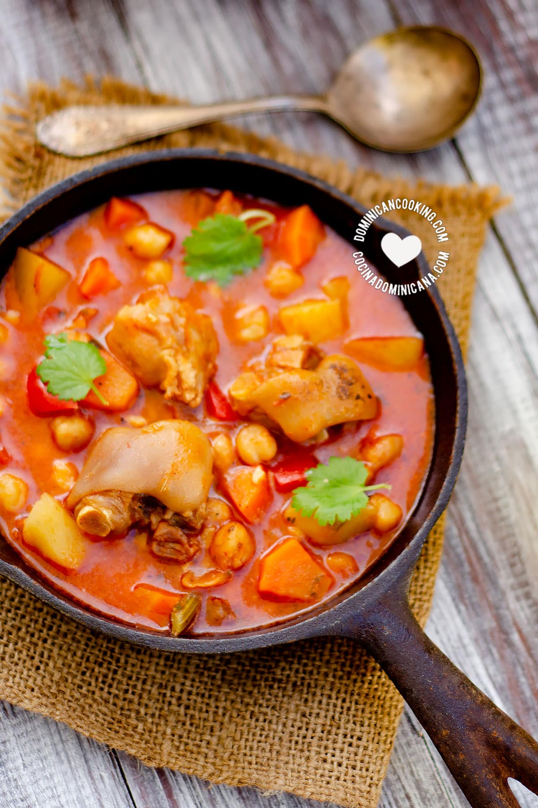

"Cosido De Pata"

This is a very amazing dish that is fall off the bone delicious!
This is one of the traditional stews of the dominican republic, and it is prepared with beef trotters, pork trotters or goat trotters. Each cook has his own combination, from simpler stews to the more complicated ones that contain more vegetables and ingredients.
Ingredients
- 2½ lbs cow trotters, [1 kg] cut into small pieces
- Juice of 1 lime
- 2 tablespoons vegetable oil, (peanut, soy or corn)
- leaves from a celery stalk
- 1 sprig thyme (fresh)
- 1 sprig oregano (fresh), or 1 teaspoon of dry leaves
- 2¼ teaspoons salt, (or more, to taste)
- ½ teaspoons pepper (freshly-cracked, or ground), (or more, to taste)
- 4 garlic cloves, crushed
- 1 large red onion, chopped
- 1 celery stalk, chopped
- 2 large tomato, chopped
- 1 bell pepper, diced
- 1 cup boiled chickpeas(optional)
- 1 cup tomato sauce
- 4 floury potatoes, diced
- 2 carrot, diced
Steps
- Season with lime: Add the lime juice to the meat and mix well.
- Brown meat: Heat oil over medium heat in a heavy pan. Add trotters to the pan and brown. Remove the pan from the heat.
- Add water: Place the meat into a pot (3 qt [3 lt] capacity). Add 6 cups of water to the pot. Add celery leaves, thyme, and oregano. Add a teaspoon of salt and a pinch of pepper.
- Boil: Boil until the trotters are very tender and the meat falls off the bones. In a conventional pot, it may take 1-2 hours or about 30 minutes in a pressure cooker. If you are not using a pressure cooker, then add water when necessary to keep the meat covered.
When the trotters are tender, remove the herbs from the pot and discard them.
- Every 5 minutes add water and stir, cover again and repeat until the meat is very tender (30 to 60 minutes, depending on the quality of the meat.
- Separate: Remove the meat from the liquid in which it boiled, set both aside. Let everything cool to room temperature.
- Cover and simmer until the vegetables are cooked-through (5 minutes).
- Cook vegetables: Return the pot you used before to the stove and heat over low heat. Add the garlic, then the onion, and cook until the onion is translucent. Add the celery stalk and then the tomatoes and bell pepper, potatoes, carrots, chickpeas, trotters, tomato sauce, and mix.
- Add liquid: Skim the fat off the liquid in which the trotters boiled. Add them to the pot (6 cups). Add Scotch bonnet pepper. Simmer covered over low heat until the potatoes and carrots are cooked through.
- Serve: Season with salt and pepper to taste. Serve with white rice and avocado slices.